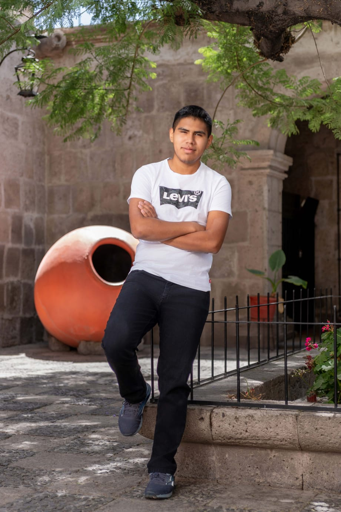

Leonel Bolivar
Sobre mí
Perfil de Estudiante
- Fuerte iniciativa para la organización y ejecución de tareas, con habilidades en la motivación y coordinación de equipos.
- Involucrado/a en organizaciones y actividades estudiantiles de la UCSP, lo que me permite desarrollar una visión práctica de la gestión y la administración.
- Profundización en áreas como la organización de eventos y la gestión de proyectos.
Actividades y Proyectos
- Participación en la organización de eventos académicos y extracurriculares dentro de la universidad, fortaleciendo mis habilidades de gestión logística y trabajo en equipo.
- Colaboración en proyectos relacionados con la mejora del ambiente estudiantil y la promoción de actividades de la carrera de Administración.
- Interés en aplicar los conocimientos de cursos como Análisis Financiero y Comportamiento del Consumidor en casos prácticos y simulaciones empresariales.
Intereses y Hobbies
- Leer
- Viajar a muchos lugares
- Gestion de proyectos y eventos
- Escuchar musica
- Ver peliculas y series
- Aprender nuevos idiomas